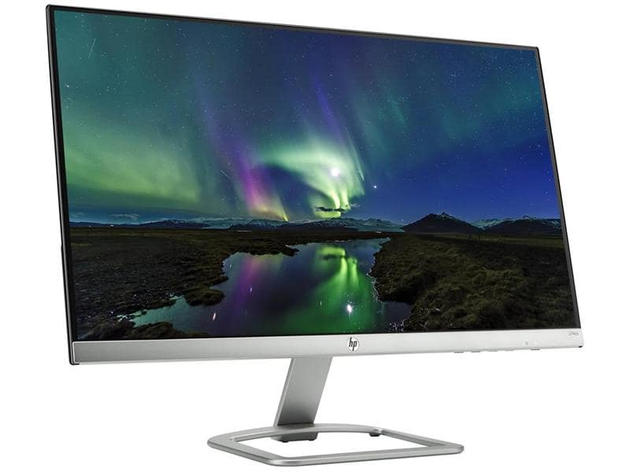

Forskjellige media typer
Vi har forskjellige typer media typer. Vi har en egen CSS-spesifikasjon for skjerm. Det er det vanlige formatet, og til dagstato er det vi bruker til å se applikasjonen våres (eks. laptop og nettbrett). Det er også viktig å skille stilark ulike medietyper som da er skjerm og print. En annen er håndholdt, men det blir nesten ikke brukt lenger pga. responsivt design. Visningsmodus er også en type, men blir nesten ikke brukt lenger pga. responsivt design. Om man vil lese mer om dette kan man google "media queries" og da får man opp mye bra. W3schools har mange bra eksempler som du kan se her

Skjerm
Telefon